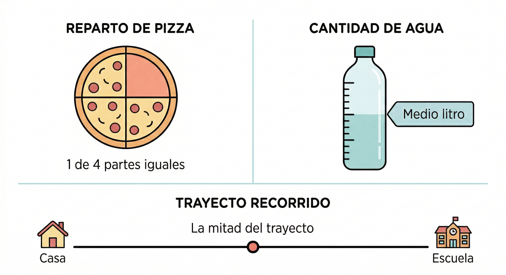
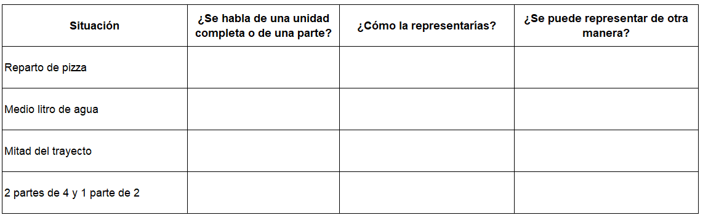
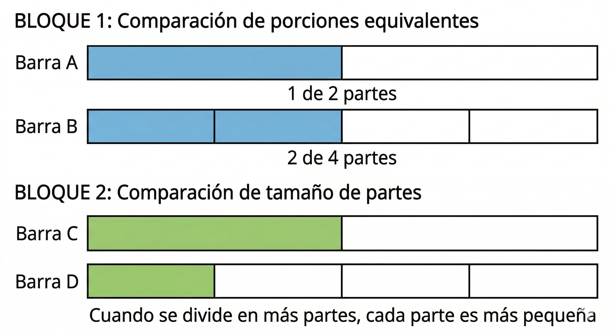
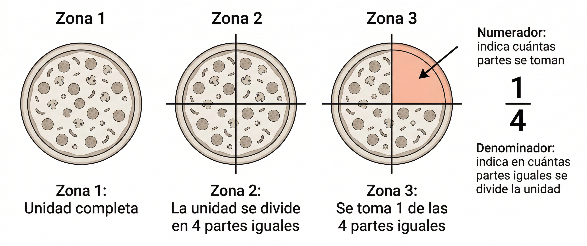
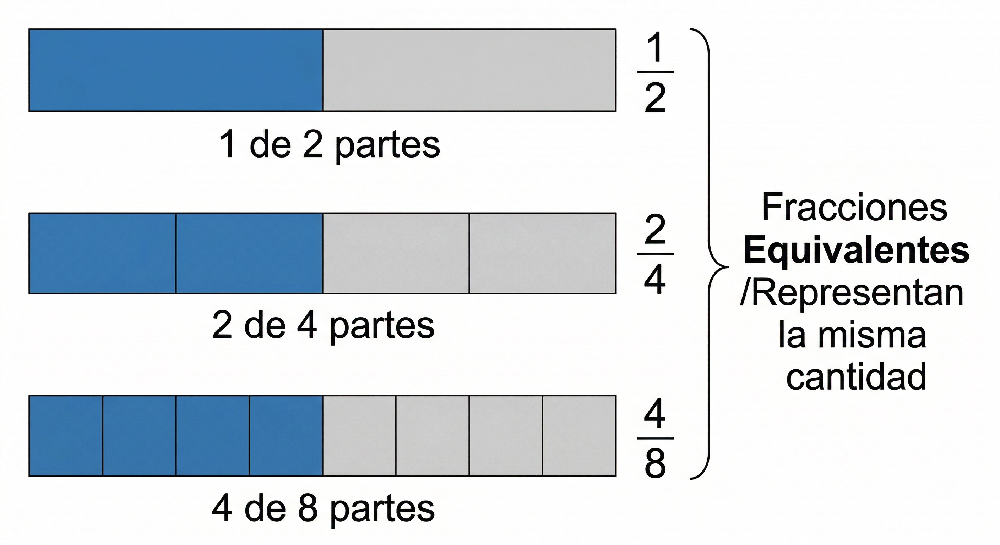
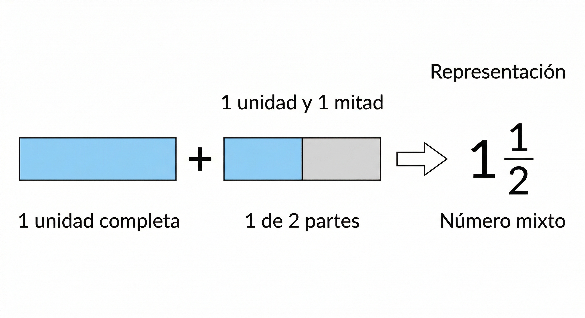
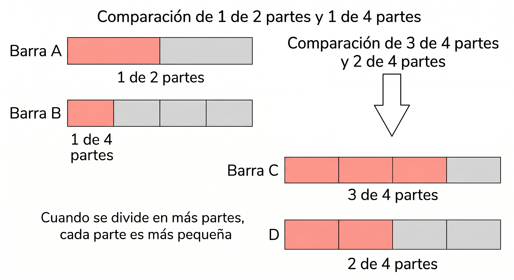

7°
EXPLORACIÓN
¿Para qué es este momento?
Antes de estudiar formalmente los números racionales, vas a observar situaciones en las que los números enteros ya no son suficientes para representar una cantidad con precisión.
En este momento no vas a memorizar definiciones ni reglas. Vas a pensar, comparar, proponer formas de representar cantidades y explicar tus ideas con tus propias palabras.
Situación 1: Repartir de manera justa
En una reunión escolar se reparten 3 pizzas del mismo tamaño entre 4 estudiantes, de manera equitativa.
Responde en tu cuaderno:
★ 1. ¿Crees que a cada estudiante le corresponde una pizza completa? ¿Por qué?
★ 2. ¿Cómo podrías representar la parte que recibe cada estudiante?
3. ¿Qué pasaría si en lugar de 4 estudiantes fueran 6?
4. ¿Qué cambia cuando una cantidad se reparte entre más personas?
Situación 2: Agua para una jornada de limpieza escolar
Para una actividad del PRAE se tienen 5 litros de agua para llenar botellas pequeñas de medio litro cada una.
Responde:
★ 1. ¿Cuántas botellas se pueden llenar completamente?
★ 2. ¿Qué significa “medio litro” en esta situación?
3. ¿Crees que “medio litro” se puede escribir de otra forma además de con palabras?
4. ¿En qué otras situaciones de la vida diaria aparecen cantidades como media unidad?
Situación 3: Trayecto recorrido por una estudiante
Una estudiante recorre desde su casa hasta el colegio.
En la mañana avanza la mitad del trayecto.
Más tarde completa la otra mitad.
Responde:
★ 1. ¿Qué significa “la mitad” del trayecto?
2. Si hoy solo hubiera recorrido una de esas partes, ¿habría llegado al colegio? Explica.
3. ¿Cómo podrías representar esa parte usando números?
4. ¿Qué otras expresiones parecidas a “la mitad” conoces?
Situación 4: Fruta para compartir en el salón
En el salón se parte una sandía en 8 partes iguales.
Sofía come 2 partes.
Miguel come 4 partes.
Responde:
★ 1. ¿Quién comió más?
★ 2. ¿Cómo representarías la parte que comió cada uno?
3. ¿La parte que comió Miguel podría describirse de más de una manera?
4. ¿Qué relación observas entre 2 partes de 8 y 4 partes de 8?
Observa, compara y representa
En todas las situaciones anteriores aparecen cantidades que no siempre son enteras.
Piensa y responde:
★ 1. ¿En cuáles situaciones el número entero no alcanza para expresar exactamente la cantidad?
★ 2. ¿Qué tienen en común expresiones como “la mitad”, “medio litro” o “2 partes de 8”?
3. ¿Por qué crees que en matemáticas necesitamos formas de representar partes de una unidad?
4. Escribe dos situaciones de tu entorno en las que una cantidad no se exprese con un número entero, sino con una parte.
Observa con atención las siguientes representaciones

Cierre
Reflexiona y responde:
¿En qué casos de la vida diaria es más útil hablar de “partes de una unidad” que de unidades completas?
ANALIZA
¿Qué vas a hacer en este momento?
Vas a analizar con más detalle cómo se representan, comparan y relacionan algunas cantidades que expresan partes de una unidad.
Aquí todavía no vas a estudiar definiciones formales, pero sí vas a descubrir relaciones importantes a partir de ejemplos, comparaciones y razonamientos.
Situación 1: Dos formas de repartir la misma cantidad
Caso A: Se reparte una barra de chocolate en 2 partes iguales y Valentina recibe 1 parte.
Caso B: Se reparte una barra igual en 4 partes iguales y Valentina recibe 2 partes.
Responde:
★ 1. ¿En cuál caso recibe más chocolate, o recibe lo mismo?
★ 2. ¿Cómo explicarías tu respuesta sin usar reglas?
3. ¿Qué cambia entre partir en 2 y partir en 4?
4. ¿Qué se mantiene igual en ambos casos?
Situación 2: Comparar porciones de una misma unidad
En una actividad de estilos de vida saludable se sirven jugos del mismo tamaño.
- A Camila le sirven 1 de 3 partes iguales del vaso.
- A Daniel le sirven 2 de 6 partes iguales del mismo vaso.
Responde:
★ 1. ¿Quién recibió más jugo, o recibieron lo mismo?
★ 2. ¿Cómo podrías comprobarlo observando la unidad completa?
3. ¿Qué relación notas entre 1 parte de 3 y 2 partes de 6?
4. ¿Crees que una misma cantidad puede representarse de maneras diferentes? Explica.
Situación 3: Cuando la cantidad es mayor que una unidad
En una campaña solidaria se empacan panes.
- En una bolsa hay 1 pan completo y además la mitad de otro.
- En otra bolsa hay 3 mitades de pan.
Responde:
★ 1. ¿Las dos bolsas contienen la misma cantidad o no?
★ 2. ¿Cómo explicarías esa cantidad usando palabras?
3. ¿Cuál de las dos formas te parece más clara para comunicar la cantidad? ¿Por qué?
4. ¿Qué ventajas tiene expresar una cantidad como “1 unidad y una parte más”?
Situación 4: ¿Cuál porción es mayor?
Observa estos casos y responde sin hacer cuentas largas:
a) 1 de 2 partes de una torta
b) 1 de 4 partes de una torta
Luego compara:
c) 3 de 4 partes de una torta
d) 2 de 4 partes de una torta
Responde:
★ 1. Entre a) y b), ¿cuál porción es mayor? ¿Por qué?
★ 2. Entre c) y d), ¿cuál porción es mayor? ¿Por qué?
3. Cuando el total se divide en más partes iguales, ¿cómo cambia el tamaño de cada parte?
4. ¿Qué debes mirar con atención para comparar dos porciones?
Piensa, analiza y decide
Lee cada afirmación y escribe si estás de acuerdo o no. Justifica con una explicación breve.
★ 1. “Dos partes de cuatro siempre representan más que una parte de dos”.
★ 2. “Una misma cantidad se puede expresar de distintas maneras”.
3. “Tener más partes siempre significa tener mayor cantidad”.
4. “Una cantidad puede estar formada por una unidad completa y una parte adicional”.
Organiza tus ideas
Completa en tu cuaderno la siguiente tabla:

Observa cuidadosamente las siguientes representaciones

Cierre
Analiza y responde:
¿Por qué no basta con mirar solo cuántas partes se toman, sino también en cuántas partes se dividió la unidad?
CONOCE ALGO NUEVO
¿Qué vas a aprender en este momento?
Vas a aprender cómo representar de manera matemática las situaciones que ya analizaste, usando un nuevo tipo de números llamados números racionales, especialmente en su forma de fracción.
Ahora sí vamos a organizar las ideas que ya construiste.
¿Cómo representar una parte de la unidad?
Cuando una unidad se divide en partes iguales, cada una de esas partes se puede representar con una fracción.
Una fracción tiene dos números:
- El número de arriba indica cuántas partes se toman.
- El número de abajo indica en cuántas partes iguales se dividió la unidad.
Observa cómo una misma unidad puede dividirse en partes iguales y cómo se representa la cantidad que se toma.

Ejemplo paso a paso
Se divide una pizza en 4 partes iguales.
Si una persona toma 1 parte, se representa así:
Paso 1: Identifica la unidad → 1 pizza
Paso 2: Observa en cuántas partes se divide → 4 partes iguales
Paso 3: Cuenta cuántas partes se toman → 1 parte
Resultado: se toma 1 de 4 partes iguales
Interpretación de la fracción
Una fracción representa:
- Una parte de una unidad
- Una cantidad menor que 1 (cuando se toma menos de la unidad completa)
- Una forma de expresar repartos, medidas o comparaciones
Ejemplos:
- Medio litro → representa una parte de un litro
- La mitad del camino → representa una parte del recorrido
- 2 partes de 8 → representa una porción de un todo
Fracciones equivalentes
Observa lo siguiente:
- 1 de 2 partes
- 2 de 4 partes
Aunque están escritas de forma diferente, representan la misma cantidad.
Esto ocurre porque:
- La unidad es la misma
- La cantidad tomada ocupa el mismo espacio
A estas representaciones se les llama fracciones equivalentes.
Observa las siguientes representaciones y compara qué cambia en la escritura y qué se mantiene igual en la cantidad representada.

¿Cómo saber si dos fracciones representan lo mismo?
Dos fracciones son equivalentes cuando:
- Representan la misma cantidad de la unidad
- Ocupan la misma proporción del todo
- Se pueden transformar una en otra manteniendo la relación
Ejemplo:
1 de 2 partes = 2 de 4 partes = 4 de 8 partes
Cantidades mayores que una unidad
No todas las cantidades son menores que una unidad.
También podemos tener:
- 1 unidad completa y una parte más
- Varias partes que superan la unidad
Ejemplo:
1 unidad y 1 mitad
Esto también se puede representar como una sola cantidad.
Observa cómo una cantidad puede estar formada por una unidad completa y una parte adicional, y cómo se puede representar de manera matemática.

Número mixto
Cuando una cantidad tiene:
- Una unidad completa
- Y una parte adicional
Se puede expresar como un número mixto.
Ejemplo:
1 unidad y 1 parte de 2
Este tipo de representación es útil para describir cantidades reales de manera clara.
Idea clave
Los números racionales permiten representar:
- Partes de una unidad
- Repartos exactos
- Cantidades que no son enteras
Esto amplía lo que podemos expresar más allá de los números enteros.
Cierre
Responde en tu cuaderno:
¿Cuándo es más útil usar una fracción que un número entero? Explica con un ejemplo de tu vida cotidiana.
ACTIVIDADES DE APRENDIZAJE
¿Qué vas a hacer en este momento?
Vas a aplicar lo que aprendiste sobre:
- Representación de fracciones
- Interpretación de numerador y denominador
- Fracciones equivalentes
- Cantidades mayores que una unidad
Resuelve cada actividad con atención y justifica tus respuestas cuando sea necesario.
Actividad 1: Identifica la fracción
Observa cada situación y responde:
★ 1. Una torta se divide en 4 partes iguales y se toma 1 parte.
¿Cómo se representa esta cantidad?
★ 2. Una barra se divide en 8 partes iguales y se toman 3 partes.
¿Cómo se representa?
3. Un litro de agua se divide en 2 partes iguales y se toma una parte.
¿Cómo se representa?
4. Un chocolate se divide en 6 partes iguales y se toman 2 partes.
¿Cómo se representa?
Actividad 2: ¿Qué significa cada número?
Observa las siguientes representaciones y responde:
★ 1. En la expresión 3 de 5 partes:
- ¿Qué indica el 3?
- ¿Qué indica el 5?
★ 2. En 2 de 7 partes:
- ¿Qué indica el número de arriba?
- ¿Qué indica el número de abajo?
3. Explica con tus palabras qué representa una fracción.
Actividad 3: Representa gráficamente
Dibuja en tu cuaderno:
★ 1. Una unidad dividida en 4 partes iguales y colorea 2 partes.
★ 2. Una unidad dividida en 3 partes iguales y colorea 1 parte.
3. Una unidad dividida en 5 partes iguales y colorea 3 partes.
Actividad 4: Compara cantidades
Responde sin hacer operaciones complejas:
★ 1. ¿Cuál es mayor:
- 1 de 2 partes o 1 de 4 partes? Explica.
★ 2. ¿Cuál es mayor:
- 3 de 4 partes o 2 de 4 partes? Explica.
3. ¿Qué ocurre con el tamaño de cada parte cuando la unidad se divide en más partes?
Observa las siguientes representaciones y analiza cómo cambia el tamaño de cada parte según la forma en que se divide la unidad.

Actividad 5: Fracciones equivalentes
Observa y responde:
★ 1. ¿Representan lo mismo? Explica:
- 1 de 2 partes
- 2 de 4 partes
★ 2. Completa:
- 1 de 2 partes = ___ de 4 partes
3. Escribe otra forma de representar la misma cantidad.
Actividad 6: Relaciona representaciones
Une cada caso con su representación:
a) Una mitad
b) Dos de cuatro partes
c) Cuatro de ocho partes
- Representan la misma cantidad
- Representan cantidades diferentes
Explica tu respuesta.
Actividad 7: Cantidades mayores que una unidad
★ 1. Representa con palabras:
- 1 unidad y 1 mitad
★ 2. Dibuja esa cantidad.
3. ¿Es mayor o menor que 1? Explica.
Actividad 8: Interpreta la situación
En una actividad escolar:
- Juan comió 2 de 4 partes de una pizza
- Ana comió 1 de 2 partes de otra pizza igual
★ 1. ¿Quién comió más?
★ 2. ¿Cómo lo sabes?
3. ¿Se puede representar la misma cantidad de dos formas diferentes? Explica.
Actividad 9: Pensamiento crítico
Lee y responde:
★ “Tener más partes siempre significa tener más cantidad.”
¿Estás de acuerdo o no? Explica con un ejemplo.
Actividad 10: Crea tu propio ejemplo
Inventa una situación de la vida cotidiana donde se use una fracción.
Debe incluir:
- La unidad
- En cuántas partes se divide
- Cuántas partes se toman
Cierre
Responde:
¿Cuál fue la actividad que más te ayudó a entender las fracciones y por qué?
REFERENCIAS BIBLIOGRÁFICAS
Ministerio de Educación Nacional. (2006).
Estándares básicos de competencias en matemáticas.
Bogotá: MEN.
Godino, Juan D.., Batanero, C., & Font, V. (2003).
Fundamentos de la enseñanza y el aprendizaje de las matemáticas para maestros.
Granada: Universidad de Granada.
Ministerio de Educación Nacional. (2016).
Vamos a aprender Matemáticas 7.
Bogotá: Ministerio de Educación Nacional.